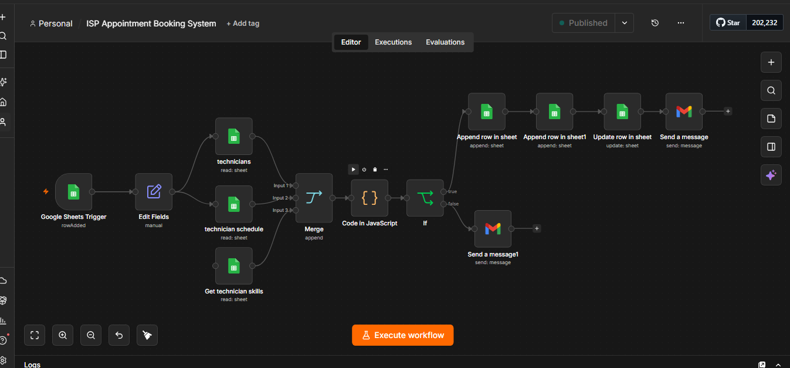

AI Systems That Increase Sales
& Automate Your Business
Save time, reduce manual work, and convert more customers using automation.
Save time, reduce manual work, and convert more customers using automation.
I build AI-powered and business automation systems that help businesses respond faster, capture more leads, manage operations, and improve efficiency.
Most businesses lose customers because of slow replies, missed follow-ups, manual processes, and poor operational visibility. My systems are designed to solve these problems automatically.
The result is less repetitive work, faster customer response, better organization, and more opportunities for business growth.
Automated appointment booking and technician scheduling system designed for Internet Service Providers.
The system helps automate the journey from customer appointment request to booking validation, technician scheduling, and customer confirmation.

Automatically captures and qualifies leads to increase sales and reduce manual lead processing.

Analyzes customer data and conversations to identify useful business insights and improve decision-making.

Responds instantly to customer messages and helps businesses improve response time and customer engagement.

Tracks events and system activity and automatically sends alerts when important events occur.

Automates content creation workflows and helps businesses organize their content strategy for consistent growth.
Capture more customers: Automatically collect and process leads from digital channels.
Respond faster: Reduce delays by automating repetitive customer communication.
Reduce manual work: Let automation handle repetitive administrative processes.
Improve operations: Give teams better visibility into customers, appointments, tasks, and business processes.
Scale efficiently: Build systems that can handle more customers without requiring the same increase in manual administrative work.
Have a repetitive business process that could be automated?